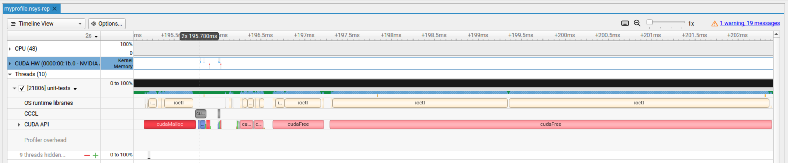

Tutorial: GPU Profiling with NVIDIA Nsight Systems and NVTX
This tutorial demonstrates how to profile Palace GPU execution using NVIDIA Nsight Systems with NVTX ranges for better code traceability.
NVIDIA Nsight Systems is a system-wide performance analysis tool that provides timeline profiling of CPU and GPU activity, including CUDA kernels, memory transfers, and API calls. NVIDIA Nsight Compute is a kernel-level profiler for detailed analysis of individual CUDA kernels. NVTX (NVIDIA Tools Extension) provides a C-based API for annotating events and ranges in your application, making profiles much easier to interpret.
GPU profiling is more complex than CPU profiling because GPU execution is asynchronous. GPU kernels launch asynchronously, so CPU timers don't capture actual GPU execution time. Performance depends heavily on memory access patterns and how well threads utilize GPU resources.
This tutorial assumes familiarity with compiling and running unit tests (see Running unit tests). You'll need Palace compiled with CUDA support (-DPALACE_WITH_CUDA=yes) and NVIDIA Nsight Systems installed.
Basic Profiling
In this tutorial, we will profile the Vector Sum - Complex unit test.
First, let us make the test more interesting for profiling by increasing the vector size. Find the Vector Sum - Complex test in test/unit/test-vector.cpp, and increase the size of the vector:
-ComplexVector cv(2);
+ComplexVector cv(20000);Make sure that we have a working and compiled version of Palace:
cmake -DPALACE_MFEM_USE_EXCEPTIONS=yes -DPALACE_WITH_CUDA=yes ..
make -j $(nproc)
bin/palace-unit-tests "Vector Sum - Complex" --device gpu --backend /gpu/cuda/magmaThis will show something along the lines of
Device configuration: cuda,cpu
Memory configuration: host-umpire,cuda-umpire
Use GPU-aware MPI: no
libCEED backend: /gpu/cuda/magma
Filters: "Vector Sum - Complex" [GPU] [Serial]
Randomness seeded to: 2674903133
===============================================================================
All tests passed (2 assertions in 1 test case)Now, run this under nsys:
nsys profile --trace=cuda,cublas --force-overwrite=true -o myprofile.nsys-rep \
bin/palace-unit-tests "Vector Sum - Complex" --device gpu --backend /gpu/cuda/magmaYou can open the report with nsys-ui myprofile.nsys-rep. You should be greeted with a window like this:

Click image to view full size - NVIDIA Nsight Systems timeline
There's a lot to unpack here. What you are looking at is the timeline of execution of the test as seen by different components. We have the CPUs on top, the GPU on the second row, and other components below. Consult the documentation to learn more about how to read this.
The key problem here is that this timeline has no clear connection to the source code. How do we know what is really happening?
We can get some clues by moving the mouse around and zooming. In particular, we can zoom into the region around 200 milliseconds. Here, we can see that there are some CUDA memory operations (under CUDA APIs), and we can see that there's some activity on the GPU (the little bars in the CUDA HW line). We can possibly guess that this is where the test is allocating the vectors and doing the sum operations.
Click image to view full size - Zoomed view showing CUDA memory operations around 200ms
Adding NVTX Ranges
With a little bit more effort, we could probably get insight directly from this report. However, it is often more convenient to use NVTX ranges to orient ourselves around the code. NVTX provides a way to mark the source code and see the markings in the Nsight report.
The most common NVTX marking is the range. As the name suggests, a range is a way to identify a block of code and give it a name.
To use NVTX, we need to include its header:
#include "nvtx3/nvtx3.hpp"Then, we can define ranges with:
nvtxRangePush("My first range");
mycode1();
mycode2();
mycode3();
nvtxRangePop();Alternatively, NVTX3 provides nvtx3::scoped_range which uses RAII to automatically define a range in a given scope. The example above would become:
{
nvtx3::scoped_range range("My first range");
mycode1();
mycode2();
mycode3();
}The advantage of this approach is that it's easy to forget to close the range manually, and RAII does it automatically when the scope ends. Consult to NVTX documentation for more details.
Let us follow this method and change the test to:
{
nvtx3::scoped_range range("Initialize");
mfem::forall(cv.Size(),
[=] MFEM_HOST_DEVICE(int i)
{
// Rank 0: [(0, 1), (0, 2), ...], Rank 1: [(1, 2), (1, 3), ...], etc.
d_real[i] = rank;
d_imag[i] = rank + i;
});
}
std::complex<double> sum;
{
nvtx3::scoped_range range("Sum");
sum = linalg::Sum(Mpi::World(), cv);
}We recompile Palace and run the profiler again. When we have ranges, we need to ask nsys to keep track of them, so the invocation changes slightly. We also add other useful components to track:
nsys profile --trace=nvtx,cuda,cublas,mpi --nvtx-capture=range \
--force-overwrite=true -o myprofile.nsys-rep \
bin/palace-unit-tests "Vector Sum - Complex" --device gpu --backend /gpu/cuda/magmaNow, if we open the new profile, we will see some differences:

Click image to view full size - Timeline with NVTX ranges and MPI initialization visible
First, we now learn that the large idle block was due to MPI initialization. Second, we see that there's now a new NVTX line. If we zoom in where it has activity, we find our Initialize and Sum blocks:

Click image to view full size - Detailed view of Initialize and Sum NVTX ranges
We can now right-click on the Initialize block and select "Fit to screen", then expand some sections to learn more about what is happening:

Click image to view full size - Expanded view showing CUDA APIs and GPU kernel timing details
What we see is that Initialize takes 200 microseconds, but most of it is due to one-time costs (as we see under CUDA APIs). The actual kernel that runs on the GPU is highlighted and takes less than 2 microseconds.
Something worth noting is that the actual kernel executed on the GPU starts only after the CPU has completed (the CuKernel1D block). This demonstrates why CPU timers cannot accurately profile GPU code unless they force synchronization (i.e., make the CPU wait for the GPU kernel to complete).
Key Takeaways
NVTX ranges provide essential context for understanding GPU profiles by connecting timeline events to source code. The asynchronous nature of GPU execution means that CPU and GPU work can overlap, making traditional CPU timing inadequate for GPU performance analysis. From here, you should be equipped to start exploring Nsight System on your own.